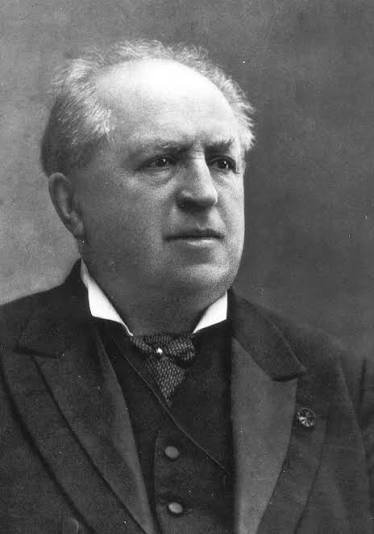

영역운동이란?
교회와 학원을 넘어 삶의 모든 영역에서 하나님의 창조 질서와 통치를 회복하는 운동 — 그 기초와 현 주소, 그리고 동참하는 길.
최한림 간사 · SFC 대학청년사역부 총무
- 1. 들어가면서
- 2. 영역운동의 이론적 기초
- 3. SFC 영역운동의 현 주소
- 4. 영역운동에 동참하기
아래로 넘겨 주세요 ↓
1. 들어가면서
“영역운동”이 뭘까요?
오늘 제가 부탁받은 강의의 주제는 “영역 운동”입니다. 여러분, “영역 운동”이 뭘까요? 대부분의 운동원들은 “영역운동”이라는 말을 SFC에 가입하면서 처음 들어보셨을거라 생각합니다. 심지어 오늘, 아까 방금 제가 말해서 처음 들어본 분들도 있을 거예요.
그만큼 “영역 운동”은 SFC 운동원들에게도 생경한 이름입니다. 그래서 이 생경한 영역 운동을 여러분들과 함께 나누기 위해서 제가 이렇게 멀리 거창까지 왔습니다.
2. 영역운동의 이론적 기초
교회와 학원, 그리고 더 넓은 삶의 자리
우리 SFC 운동의 주된 현장은 “교회”와 “학원”입니다. 이 두 현장이 SFC의 가장 중요한 두 축이라고 할 수 있습니다. 우리는 ‘학생’의 때에, “교회”와 “학원”이라는 두 현장에서 “강령 구현”이라는 우리의 궁극적인 목적을 이루기 위해서 ‘운동’하고 있습니다.
하지만 여러분, 우리 운동에 있어서는 교회와 학원이 중요한 두 축이지만, 우리의 믿음과 삶에 있어서 교회와 학원이 전부는 아니죠? 우리의 인생은 교회와 학원보다 훨씬 더 많은 삶의 자리를 가지고 있습니다. 교회와 학원은 포함해서요.
가정, 회사, 국가, 학문, 경제, 예술 등과 같이 고유한 원리를 가진 다양한 삶의 자리들이 있습니다. 우리는 이것을 “영역”이라고 부릅니다.
모든 영역은 하나님의 주권 아래 있습니다

(1837–1920)
하나님께서 온 세상을 만드셨고, 지금도 온 세상을 다스리고 계십니다. 이걸 “하나님의 주권”이라고 말합니다. 세상에는 수없이 많은 “영역”들이 있지만, 이것은 모두 하나님의 것이고, “하나님의 주권”아래에 있습니다.
네덜란드의 수상이자 위대한 개혁주의 신학자였던 아브라함 카이퍼는 이런 말을 남겼습니다.
인간 존재의 전 영역 가운데 만물의 주권자이신 그리스도께서 ‘내 것이다!’라고 외치지 않으시는 곳은 단 한 치도 없다.
— 아브라함 카이퍼
따라서 “영역”들은 하나님께서 창조하신 본래의 목적을 보존하고, 창조의 원리를 따라 아름답게 세워져 가야 합니다. 하나님께서는 하나님의 형상대로 창조하신 우리 인간을 당신이 창조하신 세상의 ‘청지기’로 세우셨습니다. 다양한 영역들을 하나님의 뜻대로 올바르게 세워가는 것도 우리 인간의 책임입니다.
죄로 왜곡된 영역들
하지만 우리 인간의 죄로 말미암아 온 세상이 ‘타락’하게 되었습니다. ’영역’ 가운데 하나님께서 주신 창조의 질서와 목적이 오염되고 변질되었습니다. 청지기인 인간은 하나님의 뜻을 따라 영역을 세워가지 못하고 우리의 이기적인 욕심과 잘못된 목적을 가지고 영역을 왜곡된 방향으로 이끌어 갔습니다.
예를 들어 ‘교육’은 하나님의 창조 질서를 발견하고, 하나님의 형상으로 창조된 인간이 인간다운 삶과 덕을 개발하기 위한 것이었습니다. 하지만 인간의 타락으로 인해 교육이 변질되어 인간의 욕심을 위한 도구가 되어 하나님의 창조세계를 파괴하고, 사람의 참된 가치가 아니라, 비교와 경쟁의 장으로 전락해버렸습니다.
일반 은총과 특별 은총
하나님께서는 이런 현실 속에서 “일반 은총”이라고 하는, 믿지 않는 사람들에게도 은혜를 주셔서 죄의 영향력을 억제하고 하나님의 창조 질서를 유지하게 하셨습니다.
여러분, 하나님께서 예수님을 믿는 우리들에게 은혜를 베푸셔서, 구원을 얻게 하신 것을 “특별 은총”이라고 합니다. 그런데 하나님께서는 믿지 않는 사람들에게도, 하나님이 만드신 이 세상의 구성원들에게도 은혜를 주셨습니다. 이것을 “일반 은총”이라고 합니다.
죄로 가득한 이 세상이 그래도 유지될 수 있도록, 하나님께서 우리가 살아가는 세상에 죄를 억제하고 타락한 세상이 유지될 수 있게 해주시는 은혜입니다. 비록 예수님을 믿지 않는 사람들이라도 올바른 지식을 추구하고, 정의로운 삶을 살아가려고 노력하는 것, 그것이 “일반 은총”입니다.
그래서, 영역 운동
하지만 “일반은총”만으론 충분하지 않습니다. 우리는 예수님을 믿음으로 (특별)은총을 받아 구원받아 새롭게 창조되었습니다.
우리 그리스도인들은 다양한 우리 삶의 자리, 곧 “영역”가운데로 들어가 하나님께서 그 ‘영역’가운데 의도하신 아름다운 창조의 질서와 목적을 찾아내고, 죄로 인해 타락해버린 현실을 비판하면서, “영역”이 하나님의 뜻을 따라 제 기능을 할 수 있도록 섬기는 역할을 해야 합니다.
따라서 우리 SFC는 “영역 운동”이라는 이름으로, 교회와 학원 뿐만 아니라 우리 삶의 모든 영역 속에서 하나님의 창조의 질서와 목적을 회복하고, 하나님의 통치를 회복하고 확장하기 위해 노력하고 있습니다.
강령에서 찾는 근거
우리 강령에서도 영역운동의 근거를 찾을 수 있습니다. 우리 SFC 강령의 목적 부분에선 이렇게 말합니다.
우리는 개혁주의 신앙과 생활을 확립하여 세상의 빛과 소금이 됨을 우리의 목적으로 한다.
— SFC 강령, 목적
우리 강령은 개혁주의적인 신앙과 생활을 확립해서 세상의 빛과 소금, 우리가 살아가는 자리에서 반드시 필요한 존재가 되어야 한다고 말하고 있습니다. 우리가 믿고 고백하는 “개혁주의” 신앙을 따라, 세상이 더 이상 잘못된 방향으로 가지 않도록 “빛”이 되고, 더 이상 썩어 부패하지 않도록 “소금”이 되어, 우리가 살아가는 삶의 자리에서 “하나님의 나라”가 이 땅 위에 올바르게 드러날 수 있도록 노력해야 합니다.
그것은 교회와 학원이라는 지금 우리들의 운동 현장 뿐만 아니라, 더 넓은 우리들의 일상과 졸업 이후에 나아가야 할 삶의 터전에까지 이어지는 ‘목적’입니다. 따라서 우리는 “강령 구현”이라는 측면에서도 반드시 “영역 운동”을 해 나가야 합니다.
3. SFC 영역운동의 현 주소
하늘의 별자리만큼 많은 영역
그런데, “영역”이라는건 너무 넓고 다양한 개념이예요. 하나님께서는 온 세상을 다스리시기 때문에 “영역”은 우리가 다 헤아릴 수 없을 만큼 많습니다. 처음 이 개념을 주창했던 아브라함 카이퍼도 말하길 “삶에 하늘의 별자리만큼 많은 영역이 있다”고 말했습니다.
SFC는 각자의 전공이나, 혹은 시대적인 과제, 혹은 운동원들의 관심사를 따라 지금까지 총 18개의 영역을 세워왔습니다.
영역일반언론통일농촌웹/IT바른교회자연과학공학선교미디어사회변혁노동구제와봉사교육의료직장예술환경
이런 영역들은 앞으로 더 늘어날 수도 있고, 시대의 필요에 따라 이름을 바꾸거나 없어질 수도 있습니다.
지금은 통일, 공학, 의료, 환경 영역의 ‘영역장’(그 영역을 대표하는 학생 리더)이 세워져서 학생의 때로부터 해당하는 영역에서 어떻게 하나님의 나라를 세워갈지 고민하고, 함께 공부하고, 운동하고 있습니다.
“예수님이라면 어떻게 하실까?”
『예수님이라면 어떻게 하실까』
그런데 이렇게 말하면 뭔가 대단히 거창한 일을 해야할 것만 같고, 특별한 사람들만 할 수 있을것 같은 생각이 들 수도 있습니다. 하지만 영역운동은 거창하고 대단하고 특별한 것만을 추구하지 않습니다.
우리 삶에서 마주하는 여러 상황들 속에서 “예수님이라면 어떻게 하실까?” 이런 질문을 가지고 우리가 할 수 있는 일들을 시도해 보는 것입니다.
- 예수님이 우리 ‘가정’의 가장이라면 어떻게 하실까?
- 예수님이 우리 학교의 학생이라면 어떻게 하실까?
- 예수님이 우리 회사의 사장이라면 어떻게 하실까?
- 예수님이 이 사업을 하신다면 어떻게 하실까?
이 질문을 가지고 우리 삶에서 할 수 있는 것들을 지금 당장 시도해보는 것이 영역 운동의 기본적인 마음가짐입니다.
4. 영역운동에 동참하기
내가 서 있는 자리에서
그러면 여러분, 영역 운동에 동참하기 위해 우리가 해야하는 것은 무엇일까요? 어떻게 하면 내가 서 있는 자리에서 영역 운동에 동참할 수 있을까요?
하나, 학업충실
가장 먼저 해야할 것은 ‘학업’입니다. 여러분은 ‘학생’이기 때문에 공부를 열심히 하는 것은 너무 당연한 일이죠.
아브라함 카이퍼가 ‘칼빈주의 강연’ 중에 ‘칼빈주의와 학문’에서 한 말입니다. 하나님께서는 우리 그리스도인들을 당신이 만드신 아름다운 피조세계의 ‘청지기’로 세우셨습니다. 그런데 청지기로서의 사명을 감당하겠다고 하면서, ‘하나님이 우리에게 맡기신 피조세계’에 대해 잘 알지 못한다면, 어떻게 ‘정복’하고, 어떻게 ‘다스릴’ 수 있겠냐고 말합니다.
하나님께서 우리에게 맡기신 청지기로서, 그리고 ‘왕적 제사장’으로서의 사명을 잘 감당하려면, 우리가 발을 딛고 서 있는 세상과 세계에 대해 잘 알아야 합니다. 우리가 하나님이 부르신 “영역”에서 하나님의 나라를 드러내려면, 그 영역을 잘 이해하고 있어야 합니다. 그리고 그 영역을 변화시킬 수 있는 실력과 학문적인 준비도 필요합니다. 우리가 학교에서 배우는 ‘학업’은 우리가 사는 세상을 잘 이해하고, 그 세상을 변혁하고 새롭게 할 수 있는 ‘역량’을 길러 줍니다.
목수 예수님의 탁자
여러분, 예수님께서는 이 땅 위에서 ‘목수’셨잖아요? 그런데 예수님께서 그 목수 일은 엉망으로 하시면서, 탁자 하나 제대로 못 만들면서 “하나님 나라의 복음”을 선포하신다고 한들, 사람들에게 설득력 있게 들리긴 힘들었을 겁니다.
우리는 삶의 다양한 영역에서 기본적으로 성실하고 책임감있게 일할 수 있어야 합니다. 학업은 그런 실력을 쌓을 수 있도록 도와줍니다.
둘, 기독교적 세계관을 확립하기
우리는 학원과 교회 SFC 모임을 통해서, ‘개혁주의 신앙’과 ‘하나님 나라’, 그리고 ‘성경의 이야기’를 배워야 합니다. 그리고 그것이 우리 ‘삶의 체계’가 되어, ‘기독교적인 세계관’을 확립할 수 있게 해야 합니다. 그 결과 무엇이 기독교적인 삶인지 판단할 수 있는 능력을 갖추어야 합니다.
무엇이 우리 시대의 우상이며, 무엇이 세속적 가치인지 분별해내며, 그것을 변혁해낼 수 있는 성경적 대안은 무엇인지 상상할 수 있는 힘을 길러야 합니다. 그리고 우리도 모르게 우리를 규정하고 있는 현대의 ‘서사(이야기)’들에 맞서는 ‘하나님의 참된 이야기’가 무엇인지, 우리는 어떤 이야기 속에서 살아가고 있는지를 이해할 수 있는 시각을 길러야 합니다.
자기창조행복중심주의소비주의다원주의개인주의상대주의기술중심주의
우리는 이런 공부를 통해 기독교 세계관을 형성하게 됩니다. 올바른 기독교 세계관이 있어야만 “영역”에 올바르게 참여할 수 있습니다. 아무리 실력이 뛰어나더라도, 이 영역에서 일어나는 일들이 기독교적으로 어떤 의미가 있는지 판단할 수 없고, 영역 운동을 통해 회복되어야 할 창조의 원리와 기독교적인 비전을 모른다면 그건 “영역 운동”을 하는 것이 아닙니다.
우리는 기독교 세계관을 확립하여 무엇이 옳고 그른지 기독교적으로 판단할 수 있는 힘을 길러야 합니다.
셋, 학원 현장과 교회에서 함께할 수 있는 ‘영역 운동’ 구상하기
영역 운동을 하는데 있어 ‘배움’의 중요성을 이야기 했습니다. 하지만 구체적인 실천과 행동이 없이는 ‘운동’이라는 말을 붙이기는 아쉬움이 남습니다. 내가 발을 딛고 살아가는 캠퍼스 현장과 매 주 함께 모여 하나님을 예배하는 교회 공동체에서 구체적으로 실천할 수 있는 ‘운동’이 있어야 합니다.
우리가 각자의 영역에서 고민한 것들을 가지고 내가 발을 딛고 살아가는 캠퍼스나 교회의 현실을 비추어보고, 개인적으로나 친한 친구들, 좀 더 확장한다면 SFC 운동원들과 함께 할 수 있는 나만의 혹은 우리들만의 영역 운동을 구상해내는 겁니다. 다양한 영역에서 중요하게 생각하는 핵심 가치들을 각자가 치열하게 고민하고 더 깊이 공부해가면서, 나의 삶, 나의 캠퍼스, 나의 교회에서 구체적으로 실천하기 위한 ‘영역 운동’을 고안해보는 겁니다.
우리 SFC가 전국적으로 열심히 하고 있는 문화금식운동, 컨닝추방운동, 브라운데이운동 모두 일종의 ‘영역운동’입니다. 하지만 좀 더 구체적으로 내가 속해 있거나 관심 있는 분야의 “영역”에서 지금 당장 우리가 할 수 있는 일들을 생각해보고 만들어 봅시다.
“가정”이라는 영역에서
저는 한 가정의 가장입니다. “가정”이라는 영역에서 제가 할 수 있는 것은 무엇일까요? 성경의 가르침을 따라 좋은 가장이 되는 것입니다. 그걸 위해서 성경을 열심히 공부할 수 있습니다. 가정의 좋은 가장이 되기 위해 항상 좋은 말, 사랑의 말, 세워주고 배려하는 말을 하기로 다짐합니다. 이것도 “가정”이라는 영역의 영역운동이 될 것입니다.
여러분이 기존에 관심을 가지고 있던 ‘학원’, ‘교회’ 뿐만 아니라, 더 넓은 여러분의 일상의 시간과 삶의 자리나 관심 분야에서(가정, 교회, 선교, 미디어 등등) 지금 당장 할 수 있는 것을 고민해보고, 친구들과 함께 “운동화” 해보십시오.
넷, 졸업 이후에 — 현실의 벽 앞에서
“SFC를 열심히 하는 동안에는 내가 세상에 나가서도 그리스도인답게 살 수 있을 줄 알았고, 변혁적인 삶, 대안적인 삶을 살 수 있을 줄 알았는데, 사회에 나가보니 나는 진짜 아무것도 아니더라” 이런 무기력하고 비관적인 말들이 심심치 않게 들려옵니다.
어디든, 어떤 분야든 이론과 현실은 다른 법이지요. 그리고 선배들의 과장이 아니라 우리가 실제로 마주하게 되는 현실이 그만큼 힘이 들고 어렵습니다.
함께 고민하고 연대하는 공동체
그러면 어떻게 영역 운동을 졸업 이후에도 계속해 나갈 수 있을까요? 우리 선배들이 공통적으로 내놓은 해답은 ‘연대’입니다. 같은 고민을 함께 공유하는 사람들, ‘하나님 나라의 회복과 확장’, ‘개혁주의적인 삶’에 대한 꿈을 함께 꾸고 있는 사람들간에 계속되는 교제와 연대, 공동체가 현실의 어려움을 극복할 수 있는 힘이 된다고 말하고 있습니다.
이 때 연대하는 사람들은 먼저 그 길을 걸어갔던 선배들일 수도 있고, 함께 그 길을 만들어가자고 약속했던 또래 운동원들일 수도 있습니다. 살아가는 현실이 참 힘들고 어렵겠지만, 함께 고민하고 연대하는 공동체를 조직하거나 내가 그 속에 참여하는 일이 영역 운동을 계속해 갈 수 있는 중요한 동력입니다. 내가 잘하고 있는지, 잘못하고 있는지, 내가 꿈꾸고 고민했던 길로 걸어가고 있는지 잠시 벗어나 있는지 이런 공동체를 통해서 계속해서 점검할 수 있기 때문입니다.
먼저 걸어간 선배들을 만나 보세요
그리고 그 분야에서 여러분들보다 먼저 삶의 “영역”으로 나아가 부딪히고 고민하고 있는 선배들을 만나보고 연대해 보십시오. 홈커밍데이 같은거 할 때, 치킨 피자만 고맙게 받지 마시고, 선배들의 삶의 이야기를 들어 보세요. 리더십 컨퍼런스, 대학생대회와 같은 장에서 선배들을 초대할 때 만나 보시고, 궁금한 것들을 물어보세요.
우리 동문회지인 “개혁신앙”은 “영역운동”에 중점을 두고 만들어지는 잡지입니다. 거기서 선배들의 생각, 삶의 이야기들을 들으시고, 관심이 있으시면 간사님들을 통해 연결을 시도해보세요. 대부분의 선배들은 기꺼이 여러분들과 이야기 나누고 싶어할 겁니다.
꼭 SFC가 아니더라도 기독교적인 가치를 가지고 다양한 영역에서 활동하고 있는 단체들에 가입하는 것도 좋은 방법일 수 있습니다. 교육 쪽으로는 널리 잘 알려져 있는 ‘좋은 교사 운동’ 뿐만 아니라, 지역이나 교회, 여러 인연들을 통해 기독교사들의 모임이 있는 경우가 있습니다. 의료 영역도 마찬가지입니다. 내가 어떤 공동체를 만들 여력이 안된다면, 이런 단체들에 소속되는 것도 좋은 방법입니다.